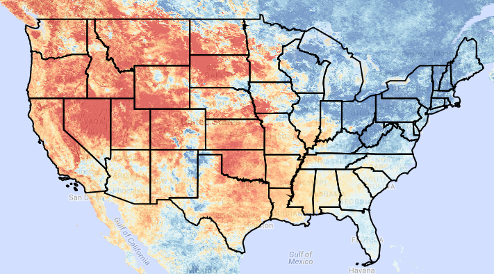
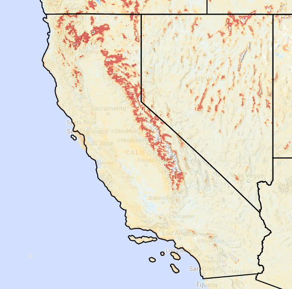
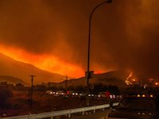

<!-- Modal -->
<div class="modal fade" id="caseStudiesModal" tabindex="-1" role="dialog" aria-labelledby="myModalLabel" aria-hidden="true" data-reveal>
 <div class="modal-dialog modal-lg">
    <div class="modal-content">
        <!----------------------------->
        <!--     HEADER             -->
        <!----------------------------->
        <div class="modal-header">
		<button type="button" class="close" data-dismiss="modal"><span aria-hidden="true">&times;</span><span class="sr-only">Close</span></button>
		<h2 class="modal-title" id="myModalLabel" style="color:red">Case Studies</h2>
		<p> We can use our drought tool to look at past drought events or even current drought events in the news.</p>
        </div>
        <div class="modal-body">
		<!----------------------------->
                <!----------------------------->
 		<div class="row">
                    <div class="col-md-8 img-portfolio">
                        <h3>2015 Winter East-West Dipole in Temperature</h3>
                        <p>The Western USA and the Eastern USA experienced very different winters for 2015. We can use our tool to look at the different winters experienced by looking at MODIS land surface temperatures for January to February 2015. </p>

<a href="http://drought-monitor3.appspot.com/?p3display=none&p5display=none&minDate=1979-01-01&yearStartClim=2000&yearEndClim=2015&varUnits=deg%20C&chartType=column&maxYear=2015&SWLat=40.0&yearEnd=2015&p7display=none&token=24c33e736eb3829729980d4a858a8f9b&p6display=none&domainType=full&maxColorbar=5&statistic=Median&minColorbar=-5&dateStart=2015-01-01&palette=4575b4,74add1,abd9e9,e0f3f8,fee090,fdae61,f46d43,d73027&SWLong=-111.0&mapid=c0ae4f789e6a9eac12c134daf0c68b01&state=California&mapCenterLongLat=-113.8677,38.9007&mapzoom=6&pointsLongLat=&p2check=checked&colorbarsize=8&p1check=checked&p2display=none&p1display=block&timeSeriesCalc=days&variable=MLST_Day_1km&downloadURL=&p7check=checked&p4check=checked&p3check=checked&NELong=-95.0&p2=-113.8677,38.9007&p3=-113.8677,38.9007&p1=-113.8677,38.9007&p7=-113.8677,38.9007&p4=-113.8677,38.9007&p5=-113.8677,38.9007&p6=-113.8677,38.9007&colorbarmap=BuYlRd&layer=stateoverlayer&calculation=anom&maxDate=2015-02-25&p5check=checked&kmlurl=&NELat=45.0&colorbarLabel=Land%20Surface%20Temperature%20Difference%20from%20Climatology%20(deg%20C)&marker_colors=[%27blue%27,%20%27green%27,%20%27orange%27,%20%27purple%27,%20%27yellow%27,%20%27pink%27,%20%27red%27]&kmloption=&dateEnd=2015-02-24&units=metric&opacity=0.7&product=M&yearStart=1979&p6check=checked&minYear=2000&p4display=none">Explore 2015 Winter Temperatures</a>
                    </div>
                    <div class="col-md-4 img-portfolio">
                         
                    </div>
                </div>

		<!----------------------------->
                <!----------------------------->
                <div class="row">
                    <div class="col-md-8 img-portfolio">
                        <h3>2014 Sierra Nevada Snow Pack</h3>
			<p>The Sierra Nevada snowpack supplies water for summer municipal and agricultural needs in California. The Winter 2014 snowpack was significantly below normal, which helped to exacerbate drought conditions in California in Summer 2014. We can use the snow index(NDSI) from satellite images to visualize the change in the snow covered area by looking at average snow coverage around April 1, 2014 (used to represent the max snowpack for the season).<br><br><a href="http://drought-monitor3.appspot.com?p2display=none&minColorbar=-0.5&maxYear=2015&colorbarsize=8&minDate=1979-01-01&calculation=anom&p1check=checked&dateEnd=2014-04-09&chartType=column&yearStart=1979&SWLong=-111.0&p4check=checked&marker_colors=['blue', 'green', 'orange', 'purple', 'yellow', 'pink', 'red']&token=7c7afa0db37a6cc5a2f476e09b9eb104&yearEnd=2015&p3display=none&domainType=full&kmloption=&layer=stateoverlayer&dateStart=2014-03-25&mapCenterLongLat=-119.4432,36.9790&p5check=checked&p2=-119.4432,36.9790&p4display=none&mapzoom=7&kmlurl=&p1display=block&maxDate=2015-02-11&yearStartClim=2000&p4=-119.4432,36.9790&SWLat=40.0&p6check=checked&opacity=0.7&timeSeriesCalc=days&p6=-119.4432,36.9790&units=metric&minYear=2000&p5display=none&variable=MNDSI&colorbarmap=RdYlBu&colorbarLabel=NDSI Difference from Climatology&p7display=none&statistic=Median&palette=d73027,f46d43,fdae61,fee090,e0f3f8,abd9e9,74add1,4575b4&p5=-119.4432,36.9790&yearEndClim=2010&p6display=none&pointsLongLat=&state=California&NELat=45.0&p3check=checked&p1=-119.4432,36.9790&maxColorbar=0.5&p3=-119.4432,36.9790&p7check=checked&NELong=-95.0&mapid=b24ff315fb84185eea964a1f8ade0d48&p7=-119.4432,36.9790&p2check=checked&varUnits=">Explore Changes in 2014 Snowpack</a> </p>
                    </div>
                    <div class="col-md-4 img-portfolio">
                         
                    </div>
                </div>

 		<div class="row">
                    <div class="col-md-8 img-portfolio">
                        <h3>2014 Carleton Complex Fire</h3>
			<p>A lightning ignition on July 14,2014 started 3 fires near Wenatchee, WA which merged to form the Carleton Complex Fire and burned until August 11, 2014. This fire burned 256,000 acres and destroyed 300 homes to become the worst fire in Washington state history. The fire started admist drought conditions that left the vegetation as dry abundant fuel. High temperature and winds during the fire also aided this fire</p>
		<a href="http://drought-monitor3.appspot.com?p6display=none&layer=kmloverlayer&domainType=full&p7=-110.2202,37.5050&p1display=block&maxDate=2015-02-11&NELat=45.0&p5check=checked&timeSeriesCalc=days&colorbarsize=8&minYear=1979&p3display=none&kmlurl=http://nimbus.cos.uidaho.edu/hegewisch/WA_CarltonComplexPerimeter_8_7_2014.kml&statistic=Mean&minColorbar=75&marker_colors=['blue', 'green', 'orange', 'purple', 'yellow', 'pink', 'red']&dateStart=2014-07-01&kmloption=&SWLong=-111.0&mapid=daa4ae499d5fb1e4a5cc0e8123485058&state=California&dateEnd=2014-07-14&pointsLongLat=&units=metric&p7check=checked&NELong=-95.0&opacity=0.7&p2=-110.2202,37.5050&mapCenterLongLat=-110.2202,37.5050&p1=-110.2202,37.5050&yearEndClim=2010&palette=4575b4,74add1,abd9e9,e0f3f8,fee090,fdae61,f46d43,d73027&p3check=checked&varUnits=&p6check=checked&p3=-110.2202,37.5050&colorbarLabel=Energy Release Component Percent of Climatology&p2check=checked&calculation=anompercentof&variable=Gerc&chartType=column&minDate=1979-01-01&yearStart=1979&p4check=checked&p5display=none&p4=-110.2202,37.5050&maxYear=2015&maxColorbar=125&SWLat=40.0&p6=-110.2202,37.5050&p5=-110.2202,37.5050&mapzoom=7&yearEnd=2015&p7display=none&p4display=none&p1check=checked&colorbarmap=BuYlRd&token=af22719891e5a0c4f0a2b2c928865c22&yearStartClim=1979&p2display=none">
Explore short term drought conditions before fire with ERC</a><br>
		<a href="http://drought-monitor3.appspot.com?opacity=0.7&maxYear=2015&p4display=none&yearStart=1979&p2=-120.1710,47.9190&mapzoom=8&p5check=checked&maxDate=2015-02-11&p4=-120.1710,47.9190&SWLat=40.0&p6=-120.1710,47.9190&NELat=45.0&p2display=none&p7check=checked&kmlurl=http://nimbus.cos.uidaho.edu/hegewisch/WA_CarltonComplexPerimeter_8_7_2014.kml&mapCenterLongLat=-120.1710,47.9190&minDate=1979-01-01&marker_colors=['blue', 'green', 'orange', 'purple', 'yellow', 'pink', 'red']&layer=kmloverlayer&yearStartClim=1979&units=metric&variable=Gpdsi&p7display=none&yearEndClim=2013&p5=-120.1710,47.9190&p6check=checked&statistic=Mean&domainType=full&p3check=checked&minColorbar=-6&colorbarmap=RdYlBu&SWLong=-111.0&p1display=block&token=1e25817b24d186a5cc28b515cb6775f4&state=California&p1check=checked&colorbarLabel=PSDI&maxColorbar=6&p5display=none&colorbarsize=8&palette=d73027,f46d43,fdae61,fee090,e0f3f8,abd9e9,74add1,4575b4&p6display=none&dateStart=2014-07-01&p2check=checked&calculation=value&p3display=none&p3=-120.1710,47.9190&varUnits=&NELong=-95.0&pointsLongLat=&minYear=1979&timeSeriesCalc=days&mapid=a2342f4e02ba6d87a16ba75073904a15&chartType=column&p7=-120.1710,47.9190&dateEnd=2014-07-14&yearEnd=2015&p4check=checked&kmloption=&p1=-120.1710,47.9190">Explore long term drought conditions before fire with PDSI</a><br>
		<a href="http://drought-monitor3.appspot.com?colorbarsize=8&p2display=none&statistic=Mean&p1check=checked&p6=-120.4292,48.1259&palette=fff5f0,fee0d2,fcbba1,fc9272,fb6a4a,ef3b2c,cb181d,99000d&chartType=column&p4check=checked&p7check=checked&p5display=none&maxYear=2015&layer=kmloverlayer&pointsLongLat=&p3check=checked&maxDate=2015-02-11&SWLat=40.0&mapCenterLongLat=-120.4292,48.1259&p2check=checked&dateEnd=2014-07-21&p6check=checked&varUnits=deg F&state=California&minYear=1979&p2=-120.4292,48.1259&yearStartClim=1979&p6display=none&SWLong=-111.0&NELong=-95.0&kmlurl=http://nimbus.cos.uidaho.edu/hegewisch/WA_CarltonComplexPerimeter_8_7_2014.kml&p5check=checked&NELat=45.0&calculation=value&maxColorbar=100&p3display=none&minDate=1979-01-01&yearEndClim=2013&variable=Gtmmx&timeSeriesCalc=days&p5=-120.4292,48.1259&p4=-120.4292,48.1259&dateStart=2014-07-14&marker_colors=['blue', 'green', 'orange', 'purple', 'yellow', 'pink', 'red']&p1=-120.4292,48.1259&mapid=6f259b34f1bc93541f07daf370d8f108&p4display=none&p7display=none&mapzoom=9&p7=-120.4292,48.1259&colorbarmap=Reds&yearStart=1979&token=ec02258f6782d6793a2e77564bfd6610&minColorbar=70&units=english&p1display=block&domainType=full&opacity=0.7&kmloption=&yearEnd=2015&p3=-120.4292,48.1259&colorbarLabel=Max Temperature (deg F)">Explore high temperatures during the fire</a><br>
		<a href="http://drought-monitor3.appspot.com?maxDate=2015-02-11&marker_colors=['blue', 'green', 'orange', 'purple', 'yellow', 'pink', 'red']&minColorbar=-0.4&p6display=none&dateStart=2014-09-01&p1display=block&maxColorbar=0.4&mapid=4fdc66d77a1bed61e3d19f7b6959ad59&p3=-120.2040,48.2456&p5check=checked&p2=-120.2040,48.2456&p2check=checked&SWLong=-111.0&kmlurl=http://nimbus.cos.uidaho.edu/hegewisch/WA_CarltonComplexPerimeter_8_7_2014.kml&colorbarsize=8&dateEnd=2014-12-31&p4display=none&p1=-120.2040,48.2456&chartType=column&colorbarLabel=NDVI Difference from Climatology&p7check=checked&p3check=checked&opacity=0.7&layer=kmloverlayer&yearEnd=2015&p7display=none&yearStart=1979&varUnits=&timeSeriesCalc=days&minYear=2000&token=8322f653759388375935fecdcb7458c8&p1check=checked&p2display=none&mapCenterLongLat=-120.2040,48.2456&NELat=45.0&p6check=checked&p3display=none&yearStartClim=2013&yearEndClim=2013&p4check=checked&NELong=-95.0&palette=d73027,f46d43,fdae61,fee08b,d9ef8b,a6d96a,66bd63,1a9850&colorbarmap=RdYlGn&p7=-120.2040,48.2456&p6=-120.2040,48.2456&SWLat=40.0&p5=-120.2040,48.2456&minDate=1979-01-01&pointsLongLat=&p5display=none&p4=-120.2040,48.2456&maxYear=2015&units=metric&statistic=Median&kmloption=&mapzoom=10&calculation=anom&state=California&variable=MNDVI&domainType=full">Explore vegetation changes after the fire</a><br>
		   </div>
                    <div class="col-md-4 img-portfolio">
                        <!-- -->
                    </div>
                </div>


        	<!----------------------------->
       </div><!--modal-body-->
    </div><!--modal-content-->
  </div><!--modal-dialog-->
</div>
